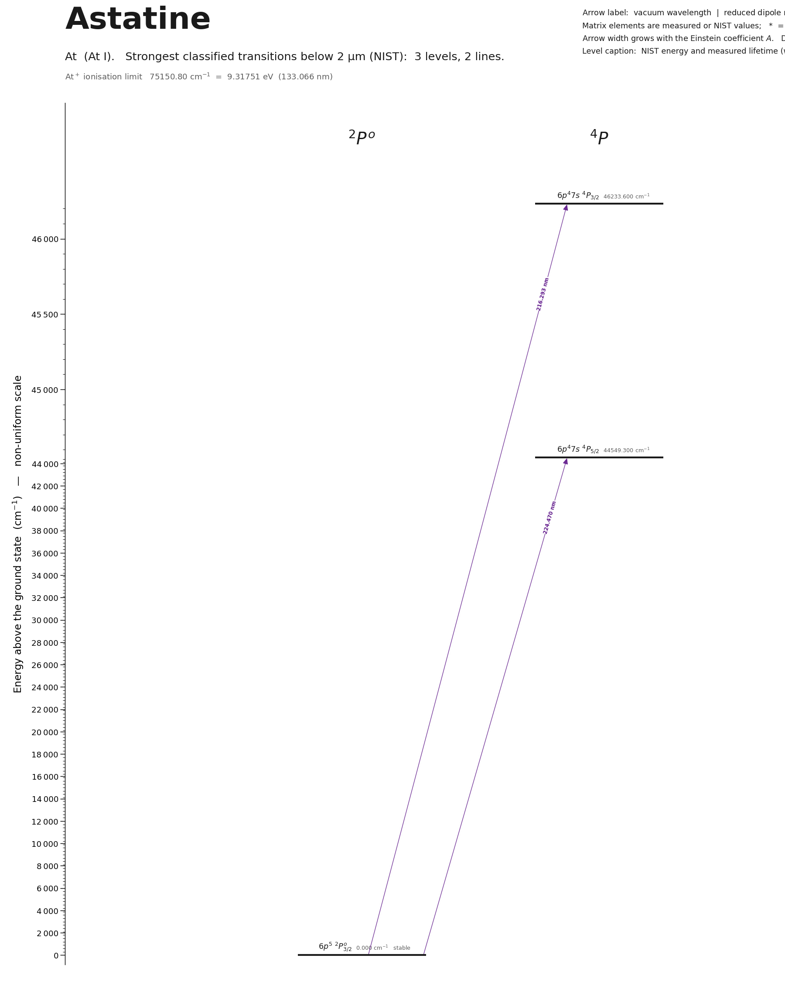

Astatine energy level diagram
Energy levels and transitions of neutral astatine (At I): the 2 strongest classified lines below 2 µm from the NIST Atomic Spectra Database and the 3 levels they connect, each line with its vacuum wavelength, frequency and, for 0 of them, the reduced dipole matrix element derived from the NIST transition rate. Measured lifetimes, transition rates, hyperfine constants and isotope shifts from the literature are included, each with its citation.
Hover a line or a level to isolate it, click to keep it selected. Scroll to zoom, drag to move.

Download: diagram (PDF) diagram (SVG) transitions (CSV) levels (CSV) source code

Key transitions of astatine
| Transition | λ vac (nm) | λ air (nm) | ν (THz) | |⟨J‖er‖J′⟩| (ea₀) | A (s⁻¹) | Γ/2π up. (MHz) | branch (%) | Use |
|---|---|---|---|---|---|---|---|---|
| 6p5 2P°3/2 – 6p47s 4P3/2 | 216.2929 | 216.2250 | 1386.0485 | – | – | – | – | first step of the ISOLDE-RILIS / TRIUMF-TRILIS three-colo… |
| 6p5 2P°3/2 – 6p47s 4P5/2 | 224.4704 | 224.4008 | 1335.5544 | – | – | – | – | alternative first step for resonance ionization |
λ, ν from NIST level energies unless a measured frequency for this isotope is available. A: measured value or NIST. Γ/2π: natural linewidth of the upper level, 1/(2πτ).
205At hyperfine structure (I = 9/2)
| Level | A (MHz) | B (MHz) | Shift of each F level from the centre of gravity (MHz) |
|---|---|---|---|
| 6p5 2P°3/2 | 676(100) | 1835(775) | F=3: -4735.96 F=4: -3255.29 F=5: -257.58 F=6: +5021.75 |
| 6p47s 4P3/2 | -365(3) | -367(50) | F=3: +2843.04 F=4: +1627.71 F=5: -120.83 F=6: -2555.50 |
Measured A, B constants; sources in the data file.
Isotope shifts
| Transition | λ vac (nm) | Isotopes | Shift (MHz) |
|---|---|---|---|
| 6p5 2P°3/2 – 6p47s 4P3/2 | 216.293 | 197-205 | -7190(750) |
| 6p5 2P°3/2 – 6p47s 4P3/2 | 216.293 | 197m-205 | -2975(750) |
| 6p5 2P°3/2 – 6p47s 4P3/2 | 216.293 | 198-205 | -8731(750) |
| 6p5 2P°3/2 – 6p47s 4P3/2 | 216.293 | 203-205 | -3437(900) |
| 6p5 2P°3/2 – 6p47s 4P3/2 | 216.293 | 207-205 | 2201(900) |
| 6p5 2P°3/2 – 6p47s 4P3/2 | 216.293 | 209-205 | 6232(750) |
| 6p5 2P°3/2 – 6p47s 4P3/2 | 216.293 | 211-205 | 9423(900) |
Shift = ν(first isotope) − ν(second isotope).
Closed and nearly closed transitions of astatine
| Transition | λ vacuum (nm) | Lower level | A (s⁻¹) | Leak per scattered photon | Photons before a leak | Where the leak goes |
|---|---|---|---|---|---|---|
| 6p5 2P°3/2 → 6p47s 4P3/2 | 216.2929 | ground | – | closed | – | no other level can be reached by electric-dipole decay |
| 6p5 2P°3/2 → 6p47s 4P5/2 | 224.4704 | ground | – | closed | – | no other level can be reached by electric-dipole decay |
A transition is closed when its upper level can decay only to the level it was excited from, so the atom keeps scattering photons. “closed”: among the levels NIST lists, no other level below the upper level has the opposite parity and |ΔJ| ≤ 1, so no other electric-dipole decay exists. Otherwise the leak is the sum of the branching ratios of the other decay lines of the upper level (or 1 − branching ratio where that of the line itself has been measured), and the number of photons is 1 / leak. “≥” and “≤”: at least one possible decay path has no listed rate, so the leak is a lower limit. These numbers are derived from the branching ratios, lifetimes and rates of this page, not measured as such; the tag names the weakest of the inputs, * marks theory and ≈ a model calculation. Listed: lines that start on the ground level or on a metastable level and leak at most 10 %, unless more than three possible decay paths have no listed rate. Fine-structure levels only: hyperfine and Zeeman dark states and forbidden decays without a listed rate are not considered. Select a line in the diagram for the full list of its leak channels.
Listed At transitions below 2 µm
| Lower level | Upper level | λ vacuum (nm) | λ air (nm) | ν (THz) | Type | |⟨J‖er‖J′⟩| (ea₀) | A (s⁻¹) | Branching (%) | Source of matrix element / A |
|---|---|---|---|---|---|---|---|---|---|
| 6p5 2P°3/2 | 6p47s 4P3/2 | 216.2929 | 216.2250 | 1386.0485 | E1 (intercombination) | – | – | – | – |
| 6p5 2P°3/2 | 6p47s 4P5/2 | 224.4704 | 224.4008 | 1335.5544 | E1 (intercombination) | – | – | – | – |
Reduced dipole matrix elements follow the convention A = ω³|d|²/(3πε₀ħc³(2J′+1)), with J′ the upper level. Tags show where a number comes from: measured, NIST compilation, high-accuracy theory, or a model calculation.
At energy levels
| Level | Energy (cm⁻¹) | J | Parity | Lifetime | gJ | Hyperfine A (MHz) | Hyperfine B (MHz) | Lifetime source | Hyperfine source |
|---|---|---|---|---|---|---|---|---|---|
| 6p5 2P°3/2 | 0.000 | 3/2 | odd | stable | – | 676 | 1835 | – | Cubiss et al., Phys. Rev. C 97, 054327 (2018), Sec. III B 2: ratios A(4P3/2)/A(ground) = … |
| 6p47s 4P5/2 | 44549.300 | 5/2 | even | – | – | – | – | – | – |
| 6p47s 4P3/2 | 46233.600 | 3/2 | even | – | – | -365 | -367 | – | Cubiss, Barzakh, Seliverstov, Andreyev, et al., Phys. Rev. C 97, 054327 (2018), Table I (… |
At⁺ ionisation limit 75150.80 cm⁻¹ = 9.31751 eV (133.066 nm)
Sources
- Cubiss et al., Phys. Rev. C 97, 054327 (2018), Sec. III B 2: ratios A(4P3/2)/A(ground) = …
- Cubiss, Barzakh, Seliverstov, Andreyev, et al., Phys. Rev. C 97, 054327 (2018), Table I (…
- NIST ASD level energies
Astatine has no stable or long-lived isotope (longest 210At, 8.1 h); every optical number comes from in-source laser resonance ionization at ISOLDE or TRIUMF, Doppler-limited (a few GHz linewidth). Isotope shifts are nu(A) - nu(205). Hyperfine keys ending in m, m1, m2 are nuclear isomers. The A and B constants listed for the 46233.6 cm^-1 level were obtained from fits of the 795 nm line with the upper/lower A ratio fixed. The electron affinity of astatine was measured as 2.41578(7) eV (Leimbach et al., Nat. Commun. (2020), doi:10.1038/s41467-020-17599-2, arXiv:2002.11418) - a property of the negative ion, recorded here only for reference. Calculated isotope-shift constants for the 795 nm line: F = -11.47(57) GHz/fm^2 (multiconfiguration Dirac-Hartree-Fock, quoted in Barzakh et al. 2019).
Atoms with measured data
- Lithium-632 levels, 85 lines
- Lithium-732 levels, 85 lines
- Beryllium-917 levels, 26 lines
- Sodium-2336 levels, 106 lines
- Magnesium-2418 levels, 61 lines
- Magnesium-2518 levels, 61 lines
- Potassium-3934 levels, 84 lines
- Potassium-4034 levels, 84 lines
- Potassium-4134 levels, 84 lines
- Calcium-4035 levels, 61 lines
- Calcium-4335 levels, 61 lines
- Chromium-5256 levels, 87 lines
- Chromium-5356 levels, 87 lines
- Rubidium-8536 levels, 94 lines
- Rubidium-8736 levels, 94 lines
- Strontium-8440 levels, 70 lines
- Strontium-8640 levels, 70 lines
- Strontium-8740 levels, 70 lines
- Strontium-8840 levels, 70 lines
- Cadmium-11115 levels, 21 lines
- Cadmium-11315 levels, 21 lines
- Cadmium-11415 levels, 21 lines
- Caesium-13331 levels, 79 lines
- Barium-13744 levels, 89 lines
- Barium-13844 levels, 89 lines
- Dysprosium-16139 levels, 55 lines
- Dysprosium-16239 levels, 55 lines
- Dysprosium-16339 levels, 55 lines
- Dysprosium-16439 levels, 55 lines
- Erbium-16673 levels, 90 lines
- Erbium-16773 levels, 90 lines
- Erbium-16873 levels, 90 lines
- Thulium-16972 levels, 73 lines
- Ytterbium-17118 levels, 26 lines
- Ytterbium-17318 levels, 26 lines
- Ytterbium-17418 levels, 26 lines
- Mercury-19927 levels, 47 lines
- Mercury-20127 levels, 47 lines
- Mercury-20227 levels, 47 lines